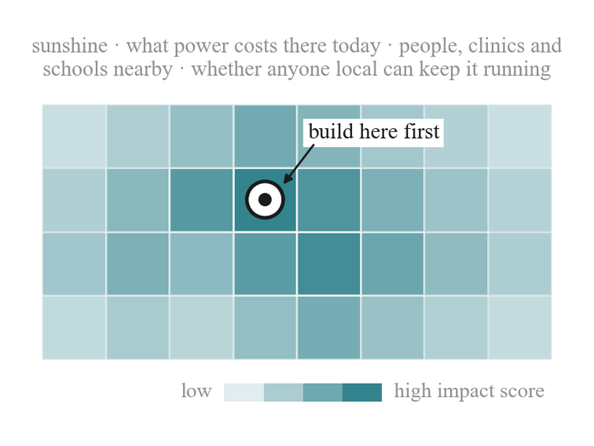
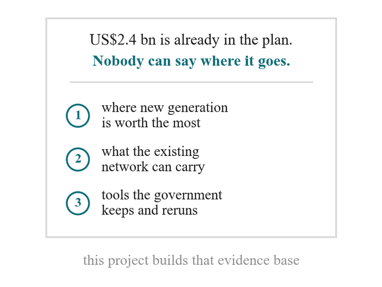
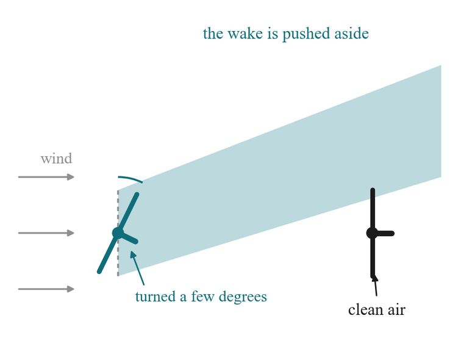
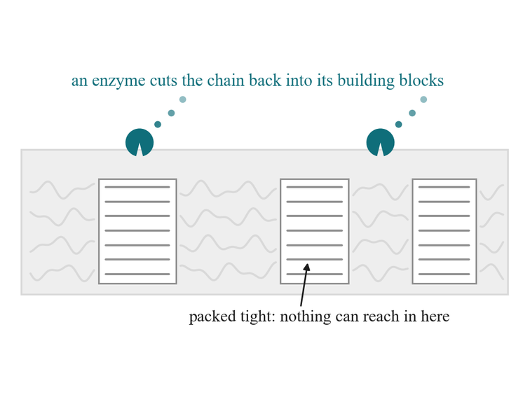
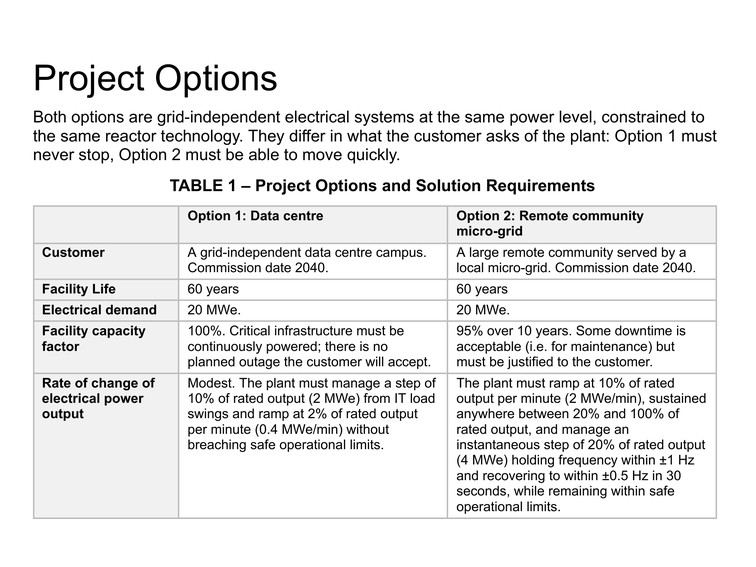
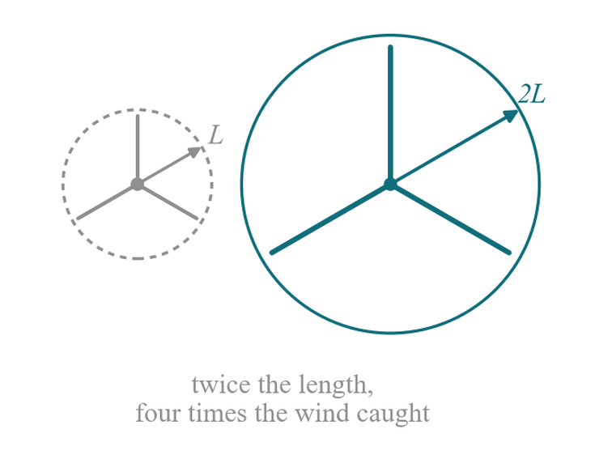
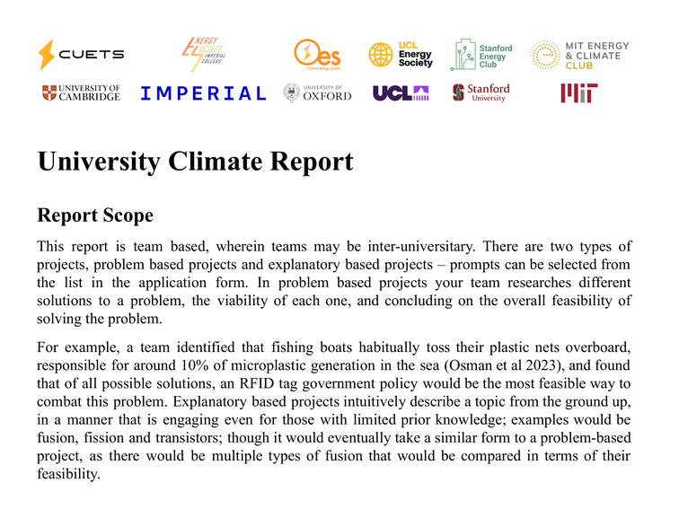
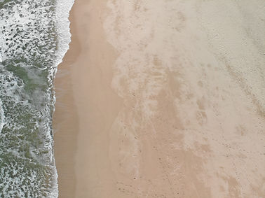
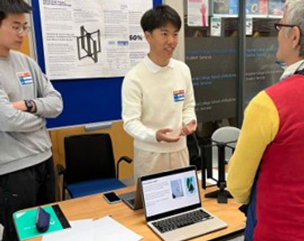

2026/2027 Projects
Details Below; applications close on the 25th of October 2026.
Questions? Read the Projects FAQ.

01
Africa Solar Micro-Grid Project
Octopus Energy
Over 600 million people across Sub-Saharan Africa still lack reliable access to electricity, and conventional grid extension remains prohibitively expensive or slow to reach much of this population. The aim is to Design a Commercially Buildable Solar Micro-Grid System and a Multi-Factor Geographic Impact Model that identifies the specific locations across the target region where that system would deliver the greatest benefit – output as an overlayed map of “Impact Score” per location.
Applications close 25 October 2026. Apply here.

02
Haiti Energy Project
Haiti All-Party Parliamentary Group
The aim is to Build the Open-Source Evidence Base for Haiti’s Energy Future - optimal siting for new renewable generation, a digital twin of the existing grid, and open environmental modelling tools the government can carry forward. This project is run alongside the Haiti All-Party Parliamentary Group and in contact with the Haitian government, and its outputs are intended to be used rather than filed.
Applications close 25 October 2026. Apply here.

03
Wind Farm Flow Reconstruction and Control Competition
Department of Aeronautics, Imperial College London
The aim is to Reconstruct the Flow Field Across a Wind Farm from Sparse Sensor Data and Use It to Control the Turbines - rebuilding the continuous velocity field from a small number of discrete measurements, then using that field to set generator torque and yaw so that the power of the whole array, rather than of any one machine, is maximised. The finals are run on hardware: six 1:250 scale instrumented turbines in the 10'x5' wind tunnel, in a marine atmospheric boundary layer, with each team’s controller installed on the real rig and run live.
Applications close 25 October 2026. Apply here.

04
Microbial Biodegradation of Plastics Competition
Plastic waste persists because the polymers we make are not the polymers anything evolved to eat. The aim is to Model and Experimentally Characterise the Microbial Biodegradation of Plastics – a mechanistic kinetic and process model, built alongside and validated against laboratory work carried out in partnership with university labs.
Applications close 25 October 2026. Apply here.

05
Advanced Modular Nuclear Reactor Competition
Rolls-Royce
Generation 4 Advanced Modular Reactors (AMRs) offer an opportunity to provide firm, carbon-free power to a range of applications such as supplying electricity to grid-independent data centres and remote communities or providing thermal energy for industrial processes. The aim of this project is to design a megawatt-scale AMR for a regional government.
Applications close 25 October 2026. Apply here.

06
Wind Turbine Blade Design Competition
Imperial College London
Blade design sets the ceiling on what a wind turbine can deliver. The aim is to Design a Wind Turbine Blade and Take it from Aerodynamic Concept Through to Physical Test – covering aerofoil and planform selection, CFD, structural layup, loads and fatigue, manufacture, and validation against experimental data.
Applications close 25 October 2026. Apply here.

07
University Climate Report
This report is team based, wherein teams may be inter-universitary. There are two types of projects, problem based projects and explanatory based projects – prompts can be selected from the list in the application form.
Applications close 25 October 2026. Apply here.
Past Projects
2025/2026 Novel Fission for CO2 Reduction
Rolls-Royce
Design a System for the Application of a High Temperature Gas Reactor for Net Reduction of CO2 with a Water Independent Heat Rejection System.

2025/2026 Wind Turbine Assembly Stability
Siemens Gamesa
Develop a damping device concept to mitigate vibrations induced by earthquakes and/or wind storms.

2025/2026 Climate Report
Work with a team to investigate an area of interest, identify opportunities, and write a report.

2024/2025 Climate Report
This report is the sum of 100s of students´ work throughout the academic year, in teams. Not only is the report greatly impactful, being requested by DESNZ (UK Government), but it is a really nice opportunity for students to collaborate on topics that they care about.

2024/2025 Urban Wind Turbine Competition
Given the fast changing directionality of wind in urban settings, the popular wind turbine design used in rural settings is much less efficient, as the wind changes faster than the rotation of the turbine. This competition had teams make designs that had superior performance.

2024/2025 Electricity Price Forecasting Competition
Due to low interconnectivity and rising renewables, predicting next day electricity supply and demand is vital to maintain a stable grid; this competiton sought to model the market using various data streams; see the brief for more details.